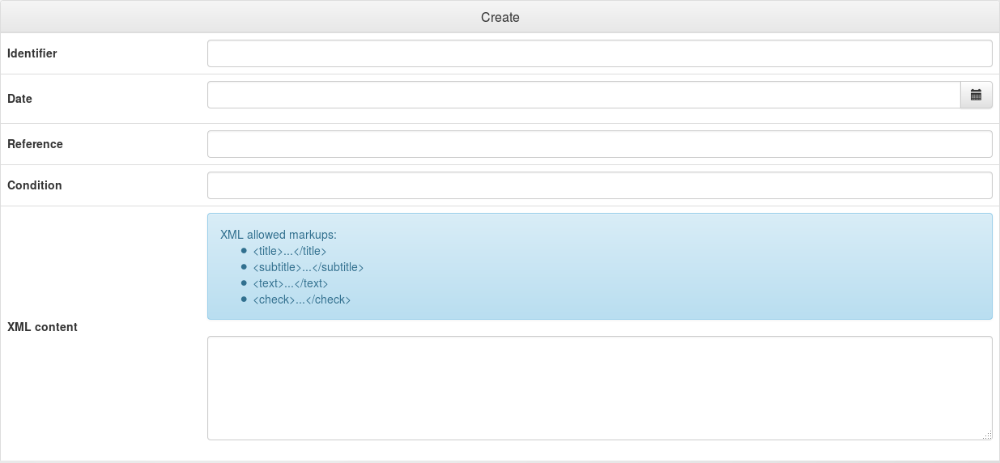
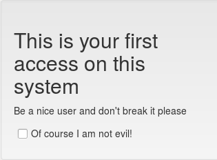

Since version 0.9.4, LemonLDAP::NG can be used to notify some messages to users: if a user has a message, the message will be displayed when he will access to the portal. If the message contains check boxes, the user has to check all of them else he can not access to the portal and get his session cookie.
Since 1.1.0, a notification explorer is available in Manager, and notifications can be done for all users, with the possibility to display conditions. When the user accept the notification, the reference is stored in his persistent session.
You just have to activate Notifications in the Manager (General Parameters > Advanced Parameters > Notifications > Activation) or in lemonldap-ng.ini:
[portal] notification = 1
By default, notifications will be stored in the same database as configuration:
You can change default parameters using the “notificationStorage” and “notificationStorageOptions” parameters with the same syntax as configuration storage parameters. To do this in Manager, go in General Parameters > Advanced Parameters > Notifications.
Parameters for File backend are the same as File configuration backend.
mkdir /usr/local/lemonldap-ng/notifications/ chown www-data /usr/local/lemonldap-ng/notifications/
_, this can be a problem if you register notifications for users having _ in their login. You can change the separator with the fileNameSeparator option, and set another value, for example @.
To summary available options:
Parameters for DBI backend are the same as DBI configuration backend.
CREATE TABLE notifications ( DATE datetime NOT NULL, uid VARCHAR(255) NOT NULL, REF VARCHAR(255) NOT NULL, cond VARCHAR(255) DEFAULT NULL, xml longblob NOT NULL, done datetime DEFAULT NULL, PRIMARY KEY (DATE, uid,REF) )
To summary available options:
Parameters for LDAP backend are the same as LDAP configuration backend.
To summary available options:
The notifications module uses a wildcard to manage notifications for all users. The default value of this wilcard is allusers, but you can change it if allusers is a known identifier in your system.
To change it, go in General Parameters > Advanced Parameters > Notifications > Wildcard for all users, and set for example alluserscustom.
Then creating a notification for alluserscustom will display the notification for all users.
The transformation between notification XML content and HTML display is done with XSLT. The default XSLT file is in portal/skins/common/notification.xsl. You can create your own XSLT file and store in another place, for example /etc/lemonldap-ng. Then just configure the new XSLT file path in Manager, go in General Parameters > Advanced Parameters > Notifications > Custom XSLT file and set for example /etc/lemonldap-ng/notification.xsl.
Notifications are XML files containing:
allusers) if the notification should be displayed for every user.
Example :
<?xml version="1.0" encoding="UTF-8" standalone="no"?> <root> <notification uid="foo.bar" date="2009-01-27" reference="ABC"> <title>You have new authorizations</title> <subtitle>Application 1</subtitle> <text>You have been granted to access to appli-1</text> <subtitle>Application 2</subtitle> <text>You have been granted to access to appli-2</text> <subtitle>Acceptation</subtitle> <check>I know that I can access to appli-1 </check> <check>I know that I can access to appli-2 </check> </notification> <notification uid="allusers" date="2009-01-27" reference="disclaimer" condition="$ipAddr =~ /^192/"> <title>This is your first access on this system</title> <text>Be a nice user and do not break it please.</text> <check>Of course I am not evil!</check> </notification> </root>
In Manager, click on Notifications and then on the Create button.

Then fill all inputs to create the notification. Only the condition is not mandatory.
When all is ok, click on Save.
New notifications can be insert using SOAP request (described in the WSDL file generated by buildPortalWSDL tool). To activate SOAP on the portal:
# SOAP functions for notification insertion (disabled by default) <Location /index.pl/notification> Order deny,allow Deny from all Allow from 192.168.2.0/24 </Location>
#!/usr/bin/perl use SOAP::Lite; use utf8; my $lite = SOAP::Lite ->uri('urn:Lemonldap::NG::Common::CGI::SOAPService') ->proxy('http://auth.example.com/index.pl/notification'); $r = $lite->newNotification( '<?xml version="1.0" encoding="UTF-8" standalone="no"?> <root> <notification uid="foo.bar" date="2009-01-27" reference="ABC"> <text> You have been granted to access to appli-1 </text> <text> You have been granted to access to appli-2 </text> <check> I know that I can acces to appli-1 </check> <check> I know that I can acces to appli-2 </check> </notification> </root> '); if ( $r->fault ) { print STDERR "SOAP Error: " . $r->fault->{faultstring}; } else { my $res = $r->result(); print "$res notification(s) have been inserted\n"; }
You can also delete some notifications with SOAP, once SOAP is activated:
#!/usr/bin/perl use SOAP::Lite; use utf8; my $lite = SOAP::Lite ->uri('urn:Lemonldap::NG::Common::CGI::SOAPService') ->proxy('http://auth.example.com/index.pl/notification'); $r = $lite->deleteNotification('foo.bar', 'ABC'); if ( $r->fault ) { print STDERR "SOAP Error: " . $r->fault->{faultstring}; } else { my $res = $r->result(); print "$res notification(s) have been deleted\n"; }
You've simply to insert a notification and connect to the portal using the same UID. You will be prompted.

Try also to create a global notification (to the uid “allusers”), and connect with any user, the message will be prompted.